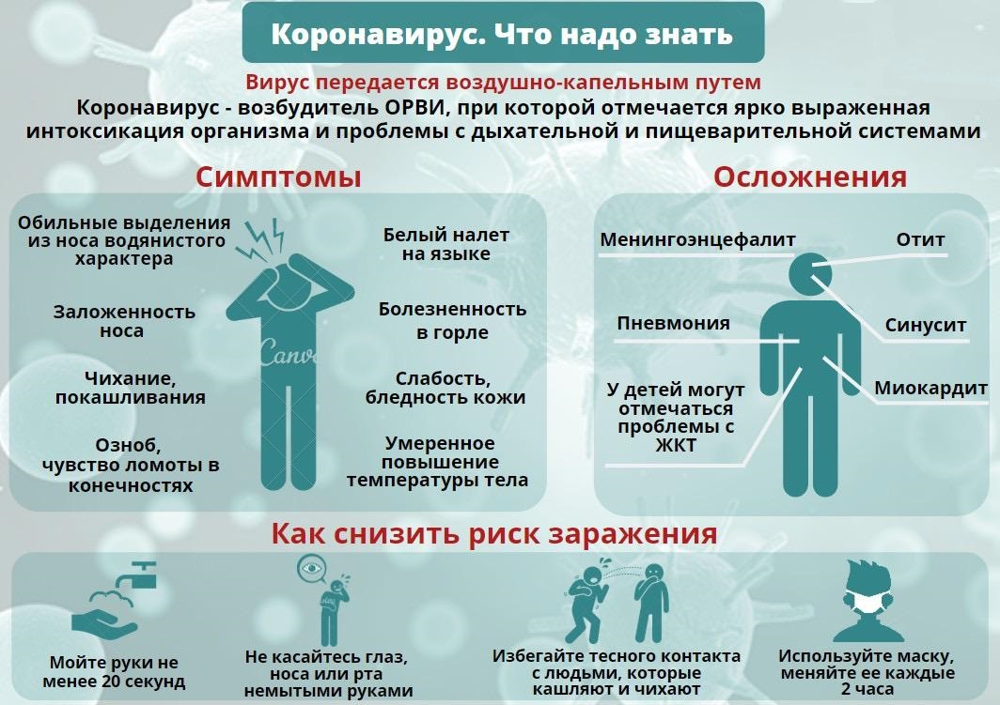

COVID-19
Будьте бдительны!
COVID-19
Не бойтесь обращаться к врачу!
COVID-19
Тщательно мойте руки, пользуйтесь антисептиком, носите защитные маски!
Что такое коронавирус?
Коронавирус — это семейство РНК-вирусов, которые поражают человека, других млекопитающих и птиц. Оно содержит 40 представителей, первый из которых был обнаружен сравнительно недавно — в 1965 году. Эти вирусы могут поражать дыхательную систему, ЖКТ и нервы. Наиболее распространенными и смертоносными считаются вирусы, поражающие дыхательные пути. Так, в 2013 году один из вирусов этого вида, получивший название «коронавирус ближневосточного респираторного синдрома» распространился по территории всей Азии, начиная с Саудовской Аравии и заканчивая Южной Кореей. Новый коронавирус 2019-nCov относится к тому же семейству и очень похож по вызываемым симптомам и своему строению на коронавирус ближневосточного респираторного синдрома и коронавирус атипичной пневмонии. Как и все вирусы, 2019-nCov состоит из вириона — внутренней части, которая, собственно и выполняет всю работу, — и капсида — оболочки вируса, которая позволяет ему прикрепляться к мембране клеток. Обычно вирусы этого семейства вызывают заболевания в легкой форме, но иногда у больного может развиться ТОРС — тяжелый острый респираторный синдром, который быстро приводит к смерти (не зря его еще прозвали «пурпурная смерть»).
Какие симптомы COVID‑19?
Основные симптомы:
— Повышение температуры тела (в >90% случаев)
— Кашель (сухой или с небольшим количеством мокроты) в 80% случаев
— Одышка (в 55% случаях)
— Ощущение сдавленности в грудной клетке (в >20% случаев)
У большинства людей (порядка 80%) болезнь заканчивается выздоровлением, при этом специфических лечебных мероприятий не требуется. Примерно в одном из шести случаев COVID-19 возникает тяжелая симптоматика с развитием дыхательной недостаточности.
У пожилых людей, а также людей с хроническими заболеваниями, например, артериальной гипертензией, заболеваниями сердца или диабетом, вероятность тяжелого течения заболевания выше.
При наличии повышенной температуры тела, кашля и затрудненного дыхания следует срочно вызывать скорую помощь (103 с мобильного).

Как защитить себя и окружающих?
Профилактика коронавируса:
— При возможности избегайте мест скопления людей.
— Если погода позволяет, ходите на улицу в перчатках, используйте санитайзер.
— При кашле и чихании прикрывайте рот и нос салфеткой или сгибом локтя. Сразу выкидывайте салфетку в контейнер для мусора с крышкой и обрабатывайте руки спиртосодержащим антисептиком или мойте их водой с мылом.
— Не трогайте руками глаза, нос и рот
— Держитесь от людей на расстоянии минимум двух метров.
При первых симптомах простуды оставайтесь дома, чтобы не заражать других.
При появлении одышки обязательно обратитесь к врачу.
Лечение коронавируса
Против вируса SARS-CoV-2 отсутствует какая-либо специфичная противовирусная терапия и нет доказано эффективной иммуномодулирующей. Антибиотики против вирусов бесполезны и не применяются в лечении. Однако они могут быть назначены в случае обнаружения бактериальной вторичной инфекции. В основном пациенты получают симптоматическую и поддерживающую терапию. В тяжёлых случаях лечение направлено на поддержание жизненно важных функций органов.
Если лечение в стационаре по каким-либо причинам невозможно, в лёгких случаях без тревожных признаков и при отсутствии хронических болезней допустим уход за больным в домашних условиях. Однако при наличии одышки, кровохарканья, повышенного выделения мокроты, признаков гастроэнтерита или изменениях психического состояния показана госпитализация.
При этом клинические рекомендации ВОЗ и Китая отличаются друг от друга. В китайских рекомендациях, в отличие от рекомендаций ВОЗ, включены спорные методы лечения, такие как применение кортикостероидов, антибиотики и противовирусные средства.
ВОЗ также предупреждает, что курение, применение народных средств, в том числе на основе трав, и самолечение, включая антибиотики, никак не помогут бороться с инфекцией, но могут нанести вред здоровью.